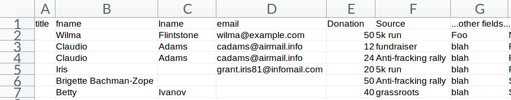
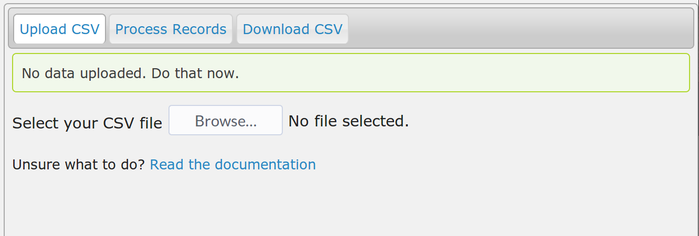
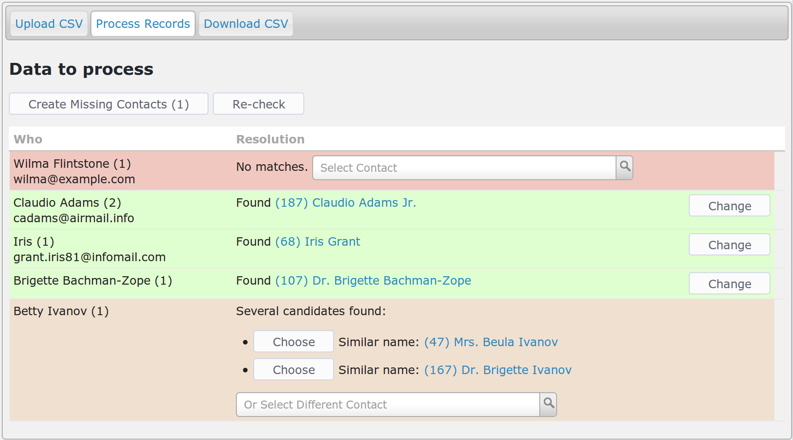
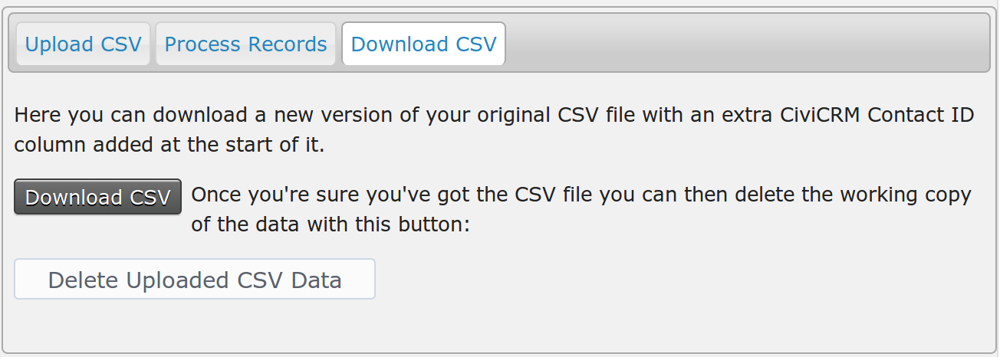
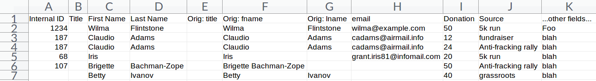

Usage
It's pretty easy, but below is a worked example to get you feeling confident. The steps are:
-
Do a little initial tweaking of your spreadsheet and save as CSV.
-
Upload your CSV spreadsheet and process it.
-
Download the new version with the matched contacts.
Initial tweaking
You need to make the first four columns of your spreadsheet contain, in this order:
- Title
- First name (can be the only name field)
- Last name
So you may need to rearrange your spreadsheet columns a bit to fit. Don't worry if some of these are blank - e.g. if you don't have titles, names or emails for some rows. Obviously you'll need something in there, but it's fine if your data just has emails, or just has names, for example.
Nb. If your data has a single "Name" column instead of separate first and last names, stick that in column 2 (or "B" in spreadsheet land) - the one for first name.
Example

This is an example dataset for the purposes of explaining how this works. Notes on this example data set:
-
The first row starts with the correct column order, as above, and continues with whatever data the file holds - beyond the first four columns doesn't matter. Also note that it doesn't matter what the exact text in the column headers are, here we have
fnamebut it could sayfirstorFirst Nameor whatever. -
Row 2, Wilma, is an example of someone not in the database.
-
Row 3, Claudio is in the database and this row and...
-
...row 4 also belong to him.
-
Row 5, Iris is missing a last name but her email is in the database.
-
Row 6 has the whole name in the first name column.
-
Rob 7, betty: There's no match in the databse for her full name, but there are a few Ivanovs.
Upload and process
You should find a new menu item CiviCRM » Contacts » CSV Import Helper, click that.

Click Browse and find your CSV file. This should then automatically begin to be uploaded (the status is displayed in the top right of the screen). Once uploaded you should be moved to the Process Records tab.

What's it showing?
The Who column shows the name and email from the uploaded data. It also shows in brackets how many rows in the input data belong to that person. The second column shows which contact matches in the database.
Of note:
-
Wilma Flintstone is listed as "No matches". We expected that, she's new to us.
-
Claudio has a
(2)in the Who column because there are two rows in the input data that belong to him. This is a very useful feature if you have a lot of records relating to the same person! He has been located as an existing contact and the name from CiviCRM is shown in the Resolution column. The resolution column also has(187)which is that contact's CiviCRM internal contact ID. -
Iris has been identified (by her email) as one Iris Grant.
-
Brigette has been identified, too. The extension was able to separate out her first and last names OK.
-
Betty was not uniqely identified, but it found several (and not more than 10) other contacts with the same last name.
What to do now?
The aim of the game is to turn all rows green! Join in, it's fun!
"No matches"
Either you want to add a new person into your database, or you need to help the extension find the right person manually. For the second case (sometimes you know something the database does not, like a change of name, or a different email address) you can select a contact using the Select Contact widget.
Otherwise you can use the Create Missing Contacts button which will create new Individuals (no, you can't use this for Organisations) for all the rows that say No Matches, in this case just one. Typically you'd leave pressing that button until you had checked the whole dataset.
"Found"
Job done! However, if you think the extension got it wrong you can click the Change button.
"Several candidates found"
If one of the ones listed is right you can click the Choose button. Otherwise you can use the select contact widget to find the person yourself.
What else?
If you've selected a contact you can "Reset" this decision and choose a different one with the Reset button that appears once you've made a choice.
What does the Re-check button do?
Sometimes while working with import data you notice things about your existing data and make updates. e.g. you might choose to merge two duplicate contacts. This will mess up the guesses in the Resolutions as the exension won't know that you've done this and will still be offering contacts that don't exist any more! Di-sa-ster, darling. That's what the Re-check button is for. It will look for matches for all rows that aren't selected (green).
Do I have to make it all green?
Nope. If you don't select a contact then when you download the output spreadsheet it will just have a blank in the Internal ID column.
Download the new CSV file!
Finally you can visit the Download tab:

There's two buttons:
-
Download CSV - get your new file
-
Delete Uploaded CSV data - deletes the copy of data you uploaded. You should always do this after you've successfully downloaded the matched data.
The outputted spreadsheet

-
It has the Internal ID from CiviCRM as the first column.
-
The title, first, last name columns are sort of duplicated with the original columns following. This is a bit weird, but it's useful to see (and possibly fix) how the extension has separated out names, e.g. Brigette.
-
The rest of the columns should be exactly as they were.
You can then import that using CiviCRM's built-in import tools, the use of which is out of scope for this documentation.
Enjoy!
Rich Lott / Artful Robot